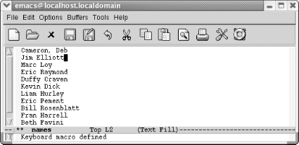
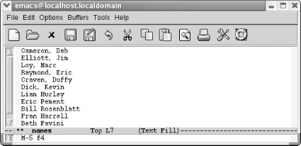

{% include JB/setup %}
{% raw %}
<div>
<div class="calibre24"></div><div class="book" xml:lang="en"><div class="book"><div class="book"><div class="book"><div class="calibre24"></div><h1 class="title"><a id="gnu3-CHP-6" class="calibre1"></a>Chapter 6. Writing Macros</h1></div></div></div><p class="copyright">What is a macro? In Emacs, a <span><em class="calibre7">macro</em></span> is
<a id="gnu3-CHP-6-ITERM-2257" class="calibre2"></a>simply
a group of recorded keystrokes you can play back over and over again.
Macros are a great way to save yourself repetitive work. For example,
let's say you want to delete the third column of a
table. Normally, you would go to the first line; move over to the
third column; delete it; then go to the second line; give the same
set of commands; and so on, until you finish, your fingers wear out,
or you get too bored. Emacs lets you record the keystrokes you used
to work on the first line of the table, and then
"play these back" repeatedly until
the job is done.<sup class="calibre6">[<a id="gnu3-CHP-6-FNOTE-1" href="#ftn.gnu3-CHP-6-FNOTE-1" class="calibre2">1</a>]</sup>
      </p><p class="copyright">Any command or action you do within Emacs, from typing text to
editing to switching buffers, can be done within a macro. The key to
using macros well is, not too surprisingly, recognizing when
you're doing repetitive work: sensing that you have
pressed more or less the same sequence of keys several times in a
row. Once you learn to recognize repetitious work, you have a good
feel for when to use macros. The next talent that
you'll need is, given that you've
recognized a cycle of "almost
identical" keystrokes, figuring out how to make that
cycle <span><em class="calibre7">precisely identical—</em></span>that is,
figuring out a set of keystrokes that, if repeated, will do exactly
what you want. Neither of these skills is particularly difficult;
with a little practice, you'll be using macros all
the time.</p><p class="copyright">If this sounds like lazy man's programming, it is:
macros give you a simple way to do very complicated things without
learning Lisp and without learning any customization tricks. If the
task you build the macro for is something you have to do frequently,
you can save macros and load them when you want to use them. In this
way, you can build up a set of convenient macros that become your own
editing commands. Even if you don't write Lisp,
you're not limited to the commands Emacs gives you;
you can make your own!</p><p class="copyright">What you use macros for will depend on the kind of work you do in
Emacs. We've used macros to:</p><div class="book"><ul class="itemizedlist"><li class="listitem"><p class="copyright">Mark up text for formatting.</p></li><li class="listitem"><p class="copyright">Copy headings from one buffer to another to create an outline.</p></li><li class="listitem"><p class="copyright">Perform complex search-and-replace type operations that query-replace
can't quite handle.</p></li><li class="listitem"><p class="copyright">Create index entries.</p></li><li class="listitem"><p class="copyright">Reformat files that were imported from another application.</p></li><li class="listitem"><p class="copyright">Edit tables.</p></li><li class="listitem"><p class="copyright">Compile, run, and test the output from a program with a single
command.</p></li><li class="listitem"><p class="copyright">Manipulate and clean large datasets.</p></li></ul></div><p class="copyright">You'll be able to think of many more things to do
with macros after you learn the few basic commands you need to use
them.</p><div class="sidebar"><a id="gnu3-CHP-6-SIDEBAR-1" class="calibre33"></a><p class="title5"><b class="calibre25">A Macro Revolution</b></p><p class="calibre34">In this book, we almost never emphasize which version of Emacs
we're talking about. Macros, specifically changes to
macros in Emacs 21.3.5, have forced our hand. Macros underwent a
major overhaul in 21.3.5. Although some of the core key bindings
still work the same way, the keyboard macro functionality was
radically expanded. If you are running an earlier version of Emacs,
we encourage you to install the latest version (see <a class="calibre2" href="ch13.html" title="Chapter 13. Platform-Specific Considerations">Chapter 13</a>) or go to the web site for this book,
<a class="calibre2" href="http://www.oreilly.com/catalog/gnu3/">http://www.oreilly.com/catalog/gnu3/</a>, which includes a link to an earlier version
of this chapter.</p></div><div class="book" xml:lang="en"><div class="book"><div class="book"><div class="book"><h1 class="title"><a id="gnu3-CHP-6-SECT-1" class="calibre1"></a>Defining a Macro</h1></div></div></div><p class="copyright">To start defining a
<a id="gnu3-CHP-6-ITERM-2258" class="calibre2"></a>
            <a id="gnu3-CHP-6-ITERM-2259" class="calibre2"></a>macro, press
<span><strong class="calibre5">F3</strong></span> or <span><strong class="calibre5">C-x (</strong></span>.<sup class="calibre6">[<a id="gnu3-CHP-6-FNOTE-2" href="#ftn.gnu3-CHP-6-FNOTE-2" class="calibre2">2</a>]</sup> The abbreviation
<code class="calibre21">Def</code> appears on the mode line, showing that you are
in macro definition mode. In this mode, Emacs records all the
keystrokes that you type, whether they are commands or literal text,
so that you can replay them later. To end the macro, press <span><strong class="calibre5">F4</strong></span> or <span><strong class="calibre5">C-x )</strong></span>;
you leave macro definition mode, and Emacs stops recording your
keystrokes. Emacs also stops recording your keystrokes automatically
if an error occurs or if you press <span><strong class="calibre5">C-g</strong></span>.</p><p class="copyright">While you're defining a macro, Emacs acts on
<a id="gnu3-CHP-6-ITERM-2260" class="calibre2"></a>your keystrokes as well as recording
them: that is, anything you type while in macro definition mode is
treated as a regular command and executed. While
you're defining a macro, you're
doing completely normal editing. That way you can see that the macro
does exactly what you want it to, and you can cancel it (with
<span><strong class="calibre5">C-g</strong></span>) if you notice that the macro
isn't really quite what you want.</p><p class="copyright">To execute your
<a id="gnu3-CHP-6-ITERM-2261" class="calibre2"></a>
            <a id="gnu3-CHP-6-ITERM-2262" class="calibre2"></a>macro, press <span><strong class="calibre5">F4</strong></span> or <span><strong class="calibre5">C-x e</strong></span>.
Emacs then replays your keystrokes exactly. (You can see that
<span><strong class="calibre5">F4</strong></span> has two different functions
relating to macros: to end a macro definition and, after
it's defined, to execute the macro.)</p><p class="copyright">This macro is referred to as the
"last" keyboard macro, with last
here meaning most recent. Only one macro is the last keyboard macro.
A macro ring, much like the kill ring, allows you to access a number
of macros during an Emacs session.</p><p class="copyright">
            <a class="calibre2" href="ch06.html#gnu3-CHP-6-TABLE-1" title="Table 6-1. Steps for creating name transposition macro">Table 6-1</a> shows the steps required to define and
execute a macro. This macro takes a list of names in the ordinary
First Name Last Name order and changes it to the frequently needed
Last Name, First
<a id="gnu3-CHP-6-ITERM-2263" class="calibre2"></a>Name order.</p><div class="book"><a id="gnu3-CHP-6-TABLE-1" class="calibre2"></a><p class="title2"><b class="calibre25">Table 6-1. Steps for creating name transposition macro</b></p><div class="table-contents"><table summary="Steps for creating name transposition macro" class="calibre8"><colgroup class="calibre9"><col class="calibre10"/><col class="calibre10"/></colgroup><thead class="calibre11"><tr class="calibre12"><th class="calibre26">
                        <p class="copyright">Keystrokes</p>
                     </th><th class="calibre27">
                        <p class="copyright">Action</p>
                     </th></tr></thead><tbody class="calibre15"><tr class="calibre12"><td class="calibre28">
                        <p class="copyright">
                           <span><strong class="calibre5">F3</strong></span> 
                           <span><em class="calibre7">or</em></span> 
                           <span><strong class="calibre5">C-x (</strong></span>
                        </p>
                     </td><td class="calibre29">
                        <p class="copyright">Start the macro; <code class="calibre21">Def</code> appears on the mode line.</p>
                     </td></tr><tr class="calibre12"><td class="calibre28">
                        <p class="copyright">
                           <span><strong class="calibre5">C-a</strong></span>
                        </p>
                     </td><td class="calibre29">
                        <p class="copyright">Move to the beginning of the current line.</p>
                     </td></tr><tr class="calibre12"><td class="calibre28">
                        <p class="copyright">
                           <span><strong class="calibre5">M-f</strong></span>
                        </p>
                     </td><td class="calibre29">
                        <p class="copyright">Move forward a word.</p>
                     </td></tr><tr class="calibre12"><td class="calibre28">
                        <p class="copyright">,</p>
                     </td><td class="calibre29">
                        <p class="copyright">Type a comma.</p>
                     </td></tr><tr class="calibre12"><td class="calibre28">
                        <p class="copyright">
                           <span><strong class="calibre5">M-t</strong></span>
                        </p>
                     </td><td class="calibre29">
                        <p class="copyright">Transpose first and last.</p>
                     </td></tr><tr class="calibre12"><td class="calibre28">
                        <p class="copyright">
                           <span><strong class="calibre5">C-n</strong></span>
                        </p>
                     </td><td class="calibre29">
                        <p class="copyright">Move to the next line.</p>
                     </td></tr><tr class="calibre12"><td class="calibre30">
                        <p class="copyright">
                           <span><strong class="calibre5">F4</strong></span> 
                           <span><em class="calibre7">or</em></span> 
                           <span><strong class="calibre5">C-x )</strong></span>
                        </p>
                     </td><td class="calibre31">
                        <p class="copyright">End the macro definition.</p>
                     </td></tr></tbody></table></div></div><br class="book"/><div class="book"><a id="ch06-3-fm2xml" class="calibre2"></a><table class="calibre8"><colgroup class="calibre9"><col class="calibre10"/></colgroup><tbody class="calibre15"><tr class="calibre12"><td class="calibre17">
                        <p class="copyright">Define the macro using the keystrokes given in <a class="calibre2" href="ch06.html#gnu3-CHP-6-TABLE-1" title="Table 6-1. Steps for creating name transposition macro">Table 6-1</a>.</p>
                     </td></tr><tr class="calibre12"><td class="calibre17">
                        <p class="copyright">
                           </p><div class="book"><div class="mediaobject"><a id="I_6_tt174" class="calibre2"></a></div></div><p class="copyright">
                        </p>
                     </td></tr><tr class="calibre12"><td class="calibre19">
                        <p class="copyright">In defining the macro, you transposed the names on the first line,
leaving the cursor on the second line.</p>
                     </td></tr></tbody></table></div><p class="copyright">Now let's be brave and assume the macro works;
we'll try repeating it five times by prefacing the
command to execute a macro with <span><strong class="calibre5">M-5</strong></span>.
Of course, in real life, you'd be better off trying
it once before doing anything so bold.</p><div class="book"><a id="ch06-4-fm2xml" class="calibre2"></a><table class="calibre8"><colgroup class="calibre9"><col class="calibre10"/></colgroup><tbody class="calibre15"><tr class="calibre12"><td class="calibre17">
                        <p class="copyright">Type <span><strong class="calibre5">M-5 F4</strong></span> or <span><strong class="calibre5">M-5 C-x e</strong></span>
                        </p>
                     </td></tr><tr class="calibre12"><td class="calibre17">
                        <p class="copyright">
                           </p><div class="book"><div class="mediaobject"><a id="I_6_tt175" class="calibre2"></a></div></div><p class="copyright">
                        </p>
                     </td></tr><tr class="calibre12"><td class="calibre19">
                        <p class="copyright">Now we've done the first six lines: one by defining
the macro and five more by executing it.</p>
                     </td></tr></tbody></table></div><p class="copyright">The macro works well, so we can finish the rest of the buffer with
confidence: type <span><strong class="calibre5">M-100</strong></span>, then
<span><strong class="calibre5">C-x e</strong></span> or <span><strong class="calibre5">F4</strong></span>. Emacs stops automatically when you reach
the end of the buffer, so it doesn't matter if you
repeat the
<a id="gnu3-CHP-6-ITERM-2264" class="calibre2"></a>
            <a id="gnu3-CHP-6-ITERM-2265" class="calibre2"></a>macro
more times than necessary.</p><p class="copyright">Here are a few points to remember:</p><div class="book"><ul class="itemizedlist"><li class="listitem"><p class="copyright">Don't forget to press <span><strong class="calibre5">F4</strong></span> or <span><strong class="calibre5">C-x )</strong></span>
when you've finished the macro. If you try to
execute a macro before it has been defined, Emacs complains and
forgets the macro's definition.</p></li><li class="listitem"><p class="copyright">
                  <span><strong class="calibre5">C-g</strong></span> terminates a macro, causing
Emacs to forget its definition.</p></li><li class="listitem"><p class="copyright">Virtually any error automatically terminates a macro. If Emacs beeps
at you, you have to start over.</p></li><li class="listitem"><p class="copyright">Emacs executes the keystrokes <span><em class="calibre7">exactly</em></span> as you
type them, with no intelligence whatsoever. Avoid making assumptions
like, "Of course I'll be at the
beginning (or end) of the line when I execute the
macro."</p></li></ul></div><p class="copyright">If you invoke a macro and it does the wrong thing, you can use
<span><strong class="calibre5">C-_</strong></span> to undo it. Emacs is smart
enough to realize that "undo the last
command" means "undo the entire
macro" rather than "undo the last
command within the macro." However, if you repeat a
macro multiple times using <span><strong class="calibre5">M-</strong></span>
            <span><em class="calibre7">n</em></span>, <span><strong class="calibre5">C-_</strong></span> undoes only the last instance of the
macro, not all the instances.</p></div><div class="book"><br class="book"/><hr class="calibre4"/><div class="book"><p class="copyright"><sup class="calibre6">[<a id="ftn.gnu3-CHP-6-FNOTE-1" href="#gnu3-CHP-6-FNOTE-1" class="calibre2">1</a>] </sup>You could delete the third column of
a table by marking it as a rectangle, as described in <a class="calibre2" href="ch07.html" title="Chapter 7. Simple Text Formatting and Specialized Editing">Chapter 7</a>. But bear with us for the sake of making
this point: when you find yourself doing repetitive work, macros are
the tool to remember.</p></div><div class="book"><p class="copyright"><sup class="calibre6">[<a id="ftn.gnu3-CHP-6-FNOTE-2" href="#gnu3-CHP-6-FNOTE-2" class="calibre2">2</a>] </sup>Mac OS X users may have bound <span><strong class="calibre5">F3</strong></span> and <span><strong class="calibre5">F4</strong></span>,
used in defining and executing macros, to another key. These users
should press <span><strong class="calibre5">Option-F3</strong></span> and <span><strong class="calibre5">Option-F4</strong></span> to get the same
functionality.</p></div></div></div></div>

{% endraw %}

